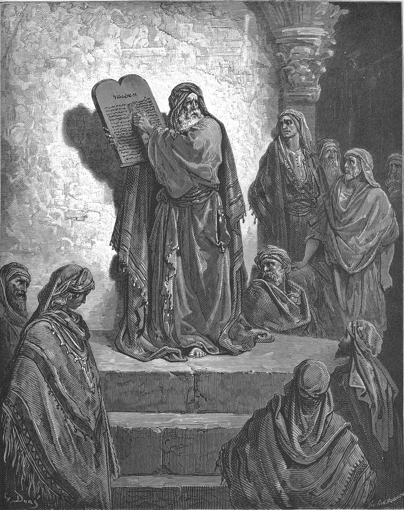

Nehemiah 8 — The Mister Translation

Nehemiah 8:1–12. Doré’s Ezra stands on stone steps and holds up a tablet; the Hebrew has a tower of wood and a sefer, a book or scroll, opened before the eyes of the people. The tablet, the steps and the listeners drawn in the foreground, one with her head bowed, are Doré’s, and the picture has the weeping of verse 9 but not the standing of verse 5 or the thirteen men beside the reader.

Translator's Notes — verse by verse
⭐ As one man, and they ask. “As one man” stands in nine verses: Numbers 14:15, Judges 6:16, Judges 20:1 (now on these pages, where the congregation assembles as one man at Mizpah for war), 20:8 and 20:11, 1 Samuel 11:7, 2 Samuel 19:15, Ezra 3:1 and here; most of them are a muster for a fight, and this one is for a book. And it is the people who ask: vayomru le-Ezra, “they said to Ezra”, to bring it. “The Water Gate” stands in five verses, all in Nehemiah, and three of them are in this chapter (verses 1, 3 and 16). The KJV has “gathered themselves together as one man into the street that was before the water gate”, the NIV “came together as one in the square before the Water Gate”, the NWT 1984 “proceeded to gather themselves as one man at the public square” and the Douay “were gathered together as one man to the street which is before the water gate”. The NIV has “They told Ezra the teacher of the Law to bring out the Book of the Law of Moses”, the KJV “they spake unto Ezra the scribe to bring the book of the law of Moses” and the Douay “they spoke to Esdras the scribe, to bring the book of the law of Moses”.
⭐ Men, women, and all who could understand. “From man to woman” stands in seven verses: Joshua 6:21 (Jericho, now on these pages), Joshua 8:25, 1 Samuel 22:19, 2 Samuel 6:19, 1 Chronicles 16:3, 2 Chronicles 15:13 and here; four are a killing and two a distribution of bread, and in this one it is the law that is brought before them. And “all who could understand by hearing” stands in this one verse. The day is the first of the seventh month, which Leviticus 23:24 sets apart (now on these pages); this chapter does not name it. The KJV has “both of men and women, and all that could hear with understanding”, the NIV “which was made up of men and women and all who were able to understand”, the NWT 1984 “of men as well as of women and of all intelligent enough to listen”, the Douay “multitude of men and women, and all those that could understand” and the Geneva “both of men and women, and of all that could hear and understand it”.
⭐ From the light until the middle of the day. “from the light until the middle of the day” stands in this one verse, and “and the ears of all the people” stands in this one verse. The book is “the book of the law”, sefer ha-torah, which stands in ten verses: Deuteronomy 28:61, 29:20, 30:10 and 31:26, Joshua 1:8 and 8:34, 2 Kings 22:8 and 22:11, 2 Chronicles 34:15 and this one. Deuteronomy 31:11 says it is to be read “in their hearing” (now on these pages). The KJV has “from the morning until midday” and “the ears of all the people were attentive unto the book of the law”, the NIV “from daybreak till noon”, the NWT 1984 “from daybreak till midday”, the Douay “from the morning until midday” and the Geneva “hearkened unto the book of the Law”.
⭐ A tower of wood. “A tower of wood”, migdal etz, stands in this one verse; the word is a tower, and what it was is a platform made for the occasion. The KJV has “a pulpit of wood, which they had made for the purpose”, the NIV “a high wooden platform built for the occasion”, the NWT 1984 “a wooden podium, which they had made for the occasion”, the Geneva “a pulpit of wood which he had made for the preaching” and the Douay “a step of wood, which he had made to speak upon”. The phrase is la-davar, “for the matter” or “for the word”. Beside him stand thirteen men, six at his right and seven at his left, and at verse 7 thirteen are named who caused the people to understand.
⭐ He opened it, and they stood. “And Ezra opened” stands in this one verse, “and when he opened it, they stood” stands in this one verse, and the reason he can be seen is that he is above them. The KJV has “(for he was above all the people;)”, the NIV “because he was standing above them” and the NWT 1984 “for he happened to be above all the people”.
⭐ Amen, Amen. “Jehovah, the great God” stands in this one verse; and “Amen, Amen” stands in two verses, Numbers 5:22, where the woman under the oath says it (now on these pages), and this one (amen). “with the lifting up of their hands” stands in this one verse; “and they bowed and prostrated themselves” stands in four verses: Exodus 4:31 (now on these pages), 1 Chronicles 29:20, 2 Chronicles 29:30 and here; and “faces to the ground” stands in nine verses, one of which is 2 Chronicles 7:3 (now on these pages). The KJV has “Ezra blessed the Lord, the great God” and “with lifting up their hands: and they bowed their heads, and worshipped the Lord with their faces to the ground”, the NIV “Ezra praised the Lord, the great God” and “Then they bowed down and worshiped the Lord with their faces to the ground”, the NWT 1984 “They then bowed low and prostrated themselves to Jehovah”, the TLB “and lifted their hands toward heaven” and the Douay “adored God with their faces to the ground”.
⭐ Understanding, six times. The root bin is in verses 2, 3, 7, 8, 9 and 12: mevin (those who could understand), ha-mevinim (those who understood), mevinim (the Levites who caused to understand), vayavinu (they understood) and hevinu (they had understood). “caused the people to understand” stands in two verses, here and verse 9, and “and the people in their place” stands in this one verse. The KJV has “caused the people to understand the law: and the people stood in their place”, the NIV “instructed the people in the Law while the people were standing there”, the NWT 1984 “were explaining the law to the people, while the people were in a standing position” and the Douay “made silence among the people to hear the law”. The TLB folds the Levites into its verse 6 and has no verse 7.
⚠ “Distinctly”. The word is mephorash, a passive participle, “made distinct”, and the question is whether it describes the reading, clear and distinct, or what was done to it, explained. “and they put sense” stands in this one verse, and “in the reading”, ba-miqra, stands in this one verse (miqra), the noun of qara, to read or to call. The KJV has “distinctly, and gave the sense, and caused them to understand the reading”, the ASV “they gave the sense, so that they understood the reading”, the NIV “making it clear and giving the meaning so that the people understood what was being read”, the NWT 1984 “it being expounded, and there being a putting of meaning [into it]”, the Douay “distinctly and plainly to be understood” and the Geneva “distinctly, and gave the sense”. This translation prints “distinctly” and leaves the other reading open.
⭐ They wept, and Nehemiah says it. “For all the people were weeping” stands in this one verse. “The Tirshatha”, the Persian title, stands in five verses: Ezra 2:63, Nehemiah 7:65, 7:69, here and 10:2. The Hebrew says of Nehemiah “he is the Tirshatha”, in the third person, and does not say “I”; the TLB makes him the speaker, “Ezra the priest, and I as governor”. The KJV has “Nehemiah, which is the Tirshatha”, the ASV “Nehemiah, who was the governor”, the NIV “Nehemiah the governor”, the NWT 1984 “that is,” before the title and the Douay “Nehemias (he is Athersatha)”. The day is called holy three times, at verses 9, 10 and 11, each time with qadosh.
⭐ Eat the fat, and drink the sweet. “the fat”, mashmannim, stands in this one verse; “the sweet”, mamtaqqim, stands in two verses, here and Song of Solomon 5:16; “and send portions” stands in this one verse, and “to him for whom nothing is prepared” stands in this one verse (nakhon). Sending portions comes back at Esther 9:19 and 9:22. The KJV has “eat the fat, and drink the sweet, and send portions unto them for whom nothing is prepared”, the NIV “enjoy choice food and sweet drinks, and send some to those who have nothing prepared”, the NWT 1984 “eat the fatty things and drink the sweet things”, the Douay “eat fat meats, and drink sweet wine”, the Geneva “send part unto them, for whom none is prepared” and the TLB “a time to celebrate with a hearty meal and to send presents to those in need”.
⭐ The joy of Jehovah. “The joy of Jehovah”, chedvat Yehovah, stands in this one verse (chedvah), and “your stronghold”, ma’uzzekhem, stands in this one verse. The word is ma’oz, the one of “Jehovah is the stronghold of my life” (Psalm 27:1, now on these pages). The KJV has “the joy of the Lord is your strength”, the ASV “the joy of Jehovah is your strength”, the NIV “the joy of the Lord is your strength”, the NWT 1984 “the joy of Jehovah is YOUR stronghold”, the Geneva “the joy of the Lord is your strength” and the Douay “the joy of the Lord is our strength”, with “our” where the Hebrew has “your”.
⭐ Do not be grieved. “and do not be grieved” stands in two verses, this one and the next; with the first word shortened, “do not be grieved” stands in three verses, adding Genesis 45:5, where Joseph tells his brothers not to be pained (now on these pages). The root is the one of Jehovah’s regret, “it grieved him to his heart” (Genesis 6:6, now on these pages). The KJV has “neither be ye sorry”, the ASV “neither be ye grieved”, the NIV “Do not grieve”, the NWT 1984 “do not feel hurt”, the Douay “be not sad” and the Geneva “be ye not sorry therefore”.
⭐ Hush, and great joy. “the Levites were quieting” stands in this one verse, and “Hush, for” stands in this one verse. The KJV has “So the Levites stilled all the people, saying, Hold your peace, for the day is holy”, the NIV “Be still, for this is a holy day”, the NWT 1984 “Keep quiet! for this day is holy” and the TLB “For this is a day of holy joy, not of sadness”. Then they go: “great joy” stands in nine verses, including this one and verse 17 (simchah), and the reason is stated, ki hevinu, “for they had understood”. The KJV has “to make great mirth”, the NIV “to celebrate with great joy”, the NWT 1984 “to carry on a great rejoicing”, the Douay “to make great mirth” and the TLB “because they could hear and understand God’s words”. They wept when they heard, and rejoiced when they understood.
⭐ To gain insight. “to gain insight”, ulehaskil, stands in two verses: Daniel 9:13 (now on these pages), where it is to gain insight into the truth, and this one (sakal). The KJV has “even to understand the words of the law”, the ASV “even to give attention to the words of the law”, the NWT 1984 “even to gain insight into the words of the law”, the Douay “that he should interpret to them the words of the law”, the Geneva “that he also might instruct them in the words of the Law” and the TLB “to go over the law in greater detail”.
⭐ Found written. “that the sons of Israel should dwell in booths” stands in this one verse. The wording is not that of Leviticus 23:42, “You shall dwell in booths for seven days” (now on these pages); it gathers the instruction and the month, and the feast is the one of Leviticus 23:34. “and pass a voice” stands in three verses: Exodus 36:6, Ezra 10:7 and here; with the singular verb the proclamation of Cyrus is the same (Ezra 1:1, now on these pages). The KJV has “that the children of Israel should dwell in booths in the feast of the seventh month”, the NIV “that the Israelites were to live in temporary shelters during the festival of the seventh month”, the NWT 1984 “that the sons of Israel should dwell in booths during the festival in the seventh month” and the Douay “that the children of Israel should dwell in tabernacles, on the feast, in the seventh month”; the TLB has “live in tents during the Festival of Tabernacles”.
⚠ Leaves, not branches; and not Leviticus’s list. The Hebrew has alei, “leaves”, five times in the verse: “and leaves of the oil tree” stands in this one verse. Of the seven English versions on the shelf only the NWT 1984 prints it, “olive leaves and the leaves of oil trees and myrtle leaves and palm leaves and the leaves of branchy trees”; the KJV has “olive branches, and pine branches, and myrtle branches, and palm branches, and branches of thick trees”, the ASV “branches of wild olive”, the NIV “branches from olive and wild olive trees, and from myrtles, palms and shade trees”, the Douay “branches of beautiful wood”, the Geneva “pine branches” and the TLB “branches from olive, myrtle, palm, and fig trees”, with a fig tree that the Hebrew does not have. “The oil tree” stands in two verses, here and Isaiah 41:19 (now on these pages); “the thick tree” stands in three verses, Leviticus 23:40 (now on these pages), Ezekiel 20:28 and this one. The list is not Leviticus’s: palm and leafy tree are in both; the olive, the oil tree and the myrtle (hadas) are new, the willows of the brook and the fruit of majestic trees are left out, and in Leviticus they are taken to rejoice with, where here they are taken to build.
⭐ Roofs, courts, squares. “the Gate of Ephraim” stands in four verses: 2 Kings 14:13, 2 Chronicles 25:23, here and Nehemiah 12:39. The booths go up on roofs and in courtyards, in the courts of the house of God and in the two squares, the Water Gate again. The KJV has “every one upon the roof of his house, and in their courts”, the NIV “on their own roofs, in their courtyards, in the courts of the house of God and in the square by the Water Gate and the one by the Gate of Ephraim”, the NWT 1984 “each one upon his own roof and in their courtyards” and the TLB “on the roofs of their houses, or in their courtyards, or in the court of the Temple, or on the plaza beside the Water Gate, or at the Ephraim Gate Plaza”.
⭐ Since the days of Jeshua son of Nun. “Jeshua son of Nun”, with Joshua’s name written as Jeshua, stands in this one verse, the name of the Levite of verse 7. “Those who had returned from the captivity”, ha-shavim min ha-shevi, stands in this one verse, with the two words of one root. ⚠ The feast itself had been kept before: “the feast of booths, as it is written” stands in this one verse, Ezra 3:4. What the text says they had not done is kein, “so”, and the thing done here is “and dwelt in the booths”, which stands in this one verse. The KJV has “Jeshua the son of Nun unto that day had not the children of Israel done so. And there was very great gladness”, the ASV “Jeshua the son of Nun”, the NIV “From the days of Joshua son of Nun until that day, the Israelites had not celebrated it like this. And their joy was very great”, the NWT 1984 “had not done that way from the days of Joshua the son of Nun”, the Douay “since the days of Josue the son of Nun the children of Israel had not done so” and the TLB “(This procedure had not been carried out since the days of Joshua.)”.
⭐ Day by day. “the book of the law of God” stands in this one verse, and “a solemn assembly, according to the ordinance” stands in this one verse (atzarah, the eighth day of Leviticus 23:36, now on these pages). On the first day he read from light to midday; the feast is the one at which Deuteronomy 31:10–11 has the law read, and now it is read each day of it. The KJV has “according unto the manner”, the ASV “according unto the ordinance”, the NIV “in accordance with the regulation, there was an assembly”, the NWT 1984 “according to the rule” and the Douay “according to the manner”; the TLB has “a solemn closing service as required by the laws of Moses”.
Patterns worth carrying forward
Where this translation keeps the words exact and distinct: “square” for rechov; “a tower of wood” for migdal etz; “cause to understand” for the Hiphil of bin, at verses 7, 8 and 9; “distinctly” for mephorash; “stronghold” for ma’oz, as at Psalm 27:1; “grieved” for te’atsevu; “great joy” for simchah gedolah; “leaves” for alei; “booths” for sukkot; “Jeshua son of Nun” as the Hebrew spells it; “Jehovah” for the Name, written six times in this chapter: verses 1, 6 (twice), 9, 10 and 14.
Echoes paid. Judges 20:1; Joshua 6:21; Leviticus 23:24, 23:34, 23:36, 23:40 and 23:42; Deuteronomy 31:11; Numbers 5:22; Exodus 4:31; 2 Chronicles 7:3; Psalm 27:1; Genesis 6:6 and 45:5; Daniel 9:13; Isaiah 41:19; Ezra 1:1.
Echoes planted. Ezra 3:1, 3:4 and 10:7; Esther 9:19 and 9:22; Nehemiah 7:65, 10:2 and 12:39; Song of Solomon 5:16; 1 Chronicles 16:3, 29:20; 2 Chronicles 15:13, 29:30; Exodus 36:6; Ezekiel 20:28. None of these is translated here yet.
⚠ A note on order: Nehemiah stands on these pages at chapters 1 and 8, chosen by how often a passage is read rather than in sequence. The sequential thread is unchanged: next in sequence is Nehemiah 2.